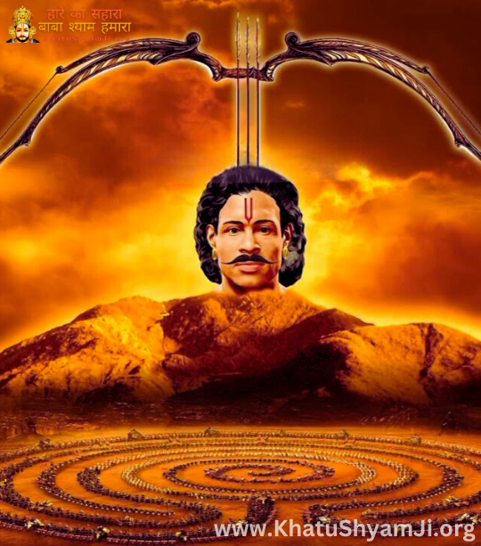
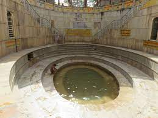

Khatu Shyam Ji Temple is a sacred Hindu temple located in Khatu, Rajasthan.
It is dedicated to Lord Shyam (Barbarika), known for his devotion and sacrifice
in the Mahabharata.
Revelation of Sheesh (Head) in Khatu

Since Barbareek was associated with the battle of Mahabharata, his head was drowned in the river Rupawati.
He was blessed by Lord Krishna that in Kalyuga he will be known by his own name Shyam and people will worship him to get Moksha.
When the period of Kalyuga begun, villagers of Khatu village in Sikar saw that milk was flowing from the utter of a cow as she reached the burial spot.
At first, they were shocked to see this but when they dug that place they found a buried head.
History of Khatu Shyam Kund Sikar Rajasthan

Some have a different story about the construction of this temple which states that Roopsingh Chauhan who was the king of Khatu and his wife Narmada Kunwar saw a dream of deity in which he instructed them to take his image out of the earth.
Later, when the place which is also known as Shyam Kund as of now when dug up, they found the idol of which they built a temple on that particular place.
Khatu Shyamji Temple History – Rajasthan
Originally, the temple was constructed in 1027 AD by the king of Khatu and his wife.
The place where they found the idol was known as Shyam Kund. Then in 1720 AD, Diwan Abhai Singh who was the ruler of Mewar renovated the temple.
The temple which is at present took its place at that time only and also it is made up of a very rare stone.
Since then, Khatu Shyam is also a family deity to many families of Rajasthan.
The architecture of this temple is very deep and is built with pure white marble of Makrana, tiles and lime motor.
The idol here is in the form of Sheesh (Head) and was put in the architecture of the temple.
The sanctum are elegantly covered with silver sheets.
The Jagmohan hall which is also known as the prayer all is also illuminated with beautiful sculptures, paintings which are depicting mythological scenes.